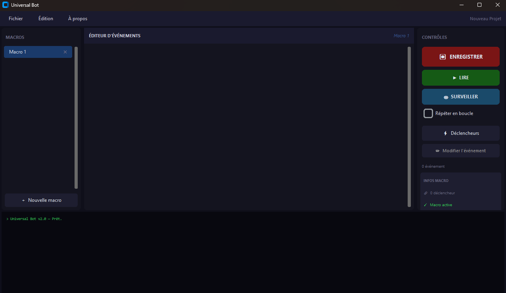
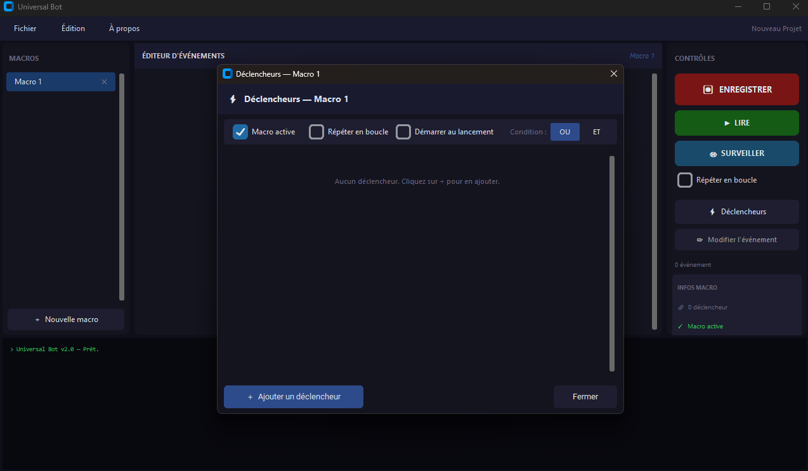

Enregistrez vos actions sur Windows — clics, frappes clavier — et rejouez-les automatiquement, selon des conditions précises basées sur des pixels, l'horloge ou un timer.
Windows 10 / 11 · Aucune installation requise
Capturez vos clics et frappes clavier en temps réel. Les doubles-clics sont détectés et fusionnés automatiquement.
Rejouez vos macros à la suite, en boucle ou une seule fois. Un décompte de 3 secondes vous laisse le temps de vous placer.
Laissez Universal Bot surveiller vos conditions et déclencher les macros automatiquement, même sans vous.
Pixel, horloge ou timer — combinez plusieurs conditions avec les opérateurs ET / OU pour un contrôle précis.
Interface

Vue principale — Liste des macros · Éditeur d'événements · Contrôles

Fenêtre Déclencheurs — Configuration des conditions ET / OU
Documentation
Tout ce qu'il faut savoir pour utiliser Universal Bot.
Lancez l'application, puis repérez les trois zones de l'interface :
Une macro est une séquence d'actions (clics, touches) que vous pouvez rejouer à volonté.
Le bouton ▶ LIRE lit toutes les macros du projet dans l'ordre.
Lit Macro 1, puis Macro 2, puis Macro 3… et s'arrête à la fin.
Lit Macro 1, 2, 3… puis recommence depuis le début, indéfiniment, jusqu'au clic sur STOP LECTURE.
Un décompte de 3 secondes s'affiche (Lecture dans 3… 2… 1…) vous laissant le temps de cliquer dans la fenêtre cible. Cliquer à nouveau sur le bouton pendant ce décompte annule la lecture.
Le mode Surveiller parcourt toutes vos macros en boucle et les déclenche automatiquement selon les conditions configurées.
Les déclencheurs définissent quand une macro doit se déclencher pendant la surveillance. Accédez-y via le bouton ⚡ Déclencheurs dans le panneau droit.
Surveille la couleur d'un pixel précis de l'écran. Configurez X, Y et la couleur de référence via "Capturer le pixel".
Revérifié ~100 ms. Condition dynamique : peut redevenir vraie ou fausse à tout moment.
Déclenche à une heure précise (format HH:MM:SS, horloge système).
Si la surveillance démarre après l'heure configurée, la condition est immédiatement active.
Compte à rebours qui démarre au moment où la surveillance commence.
Un nouveau STOP puis SURVEILLER repart le timer de zéro.
La macro se déclenche si au moins un déclencheur est vrai.
La macro se déclenche seulement si tous les déclencheurs sont vrais en même temps.
Ces options sont accessibles dans la fenêtre ⚡ Déclencheurs de chaque macro.
Les projets se sauvegardent dans des fichiers .ubot (format texte JSON).
La bande verte en bas affiche l'état en temps réel. Voici les messages courants :
Téléchargement